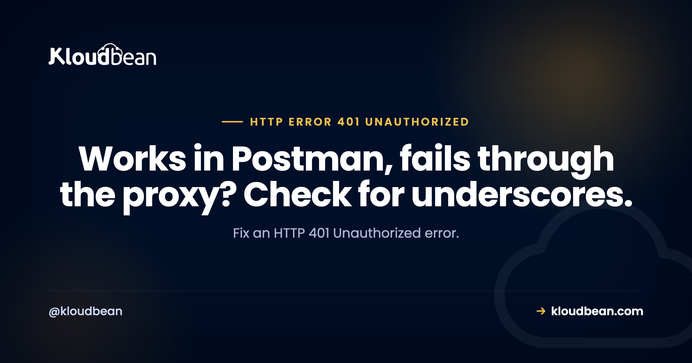

HTTP Error 401 Unauthorized: It Actually Means Unauthenticated

HTTP 401 is named badly and it costs people time. The status text says "Unauthorized", but what it means is unauthenticated: the server does not know who you are and wants credentials. Being refused despite valid credentials is a 403. That distinction is not pedantry, it is the fork in the diagnosis. A 401 means your credentials were missing, unreadable, expired, or never arrived. A 403 means they arrived, were understood, and were not enough. If you are looking at a 401, the question is always what happened to the credentials.
Confirm the credentials are actually reaching the server, then confirm they are still valid. Send the request with curl -v to see the exact Authorization header you transmitted, and decode any JWT to check its expiry. The causes people miss are a proxy stripping the header, which nginx does by default to any header containing an underscore, a token issued for a different environment, and server clock drift making a valid token look expired.
401 or 403? Get this right first
| 401 | 403 | |
|---|---|---|
| Meaning | I do not know who you are | I know, and you still cannot |
| Credentials | Missing, malformed, or expired | Present and valid |
| Will logging in help? | Yes | No |
| Should include | A WWW-Authenticate header | Nothing in particular |
| Look at | The token and how it travels | Roles, scopes, permissions |
One practical note on that WWW-Authenticate row. The specification says a 401 should include it, telling the client which scheme to use. Plenty of APIs skip it. If you are building the API, include it, because a client that receives a bare 401 cannot tell whether it should be retrying with a bearer token, prompting for a password, or giving up. If 403 is what you are actually seeing, that is a different investigation.
Step 1: see what you actually sent
Not what you meant to send. Client libraries transform headers, environment variables go stale, and template strings interpolate empty values without complaint.
curl -v https://api.example.com/v1/me \
-H "Authorization: Bearer $TOKEN" 2>&1 | grep -iE "^> (authorization|host)|^< HTTP|^< www-authenticate"Three failure modes show up immediately here. The header is absent entirely, which usually means an unset variable interpolated to nothing. It reads Bearer with nothing after it, same cause. Or the value is there but the scheme is wrong, sending Basic where the API expects Bearer or the other way round.
That empty-variable case is worth a habit. echo "[$TOKEN]" before the request takes two seconds and rules out the most common cause of all.
Step 2: is the token expired?
A JWT carries its own expiry, and you can read it without any tooling. The payload is the middle segment, base64url encoded:
echo "$TOKEN" | cut -d. -f2 | base64 -d 2>/dev/null | python3 -m json.toolYou are looking at three fields. exp is the expiry, iat is when it was issued, and nbf is a not-valid-before time if present. All are Unix timestamps. Compare against now:
date +%sTo be clear about what this does: it decodes the payload without verifying the signature, so it tells you what the token claims rather than whether the token is trustworthy. That is exactly what you want when debugging expiry, and it is not a security check.
If the token is expired, the real question is why your refresh logic did not renew it. A 401 arriving in production for a token that should have been refreshed is a bug in the refresh path, not a token problem, and re-issuing by hand hides it until next time. That refresh path is worth designing once rather than patching under pressure, which is what this practical guide to JWT authentication in Node and Python works through.
Step 3: clock skew, the one that makes no sense
If the token looks perfectly valid and the server still rejects it, check the server's clock. Token validation compares timestamps, so a server whose clock has drifted will read a fresh token as expired, or a valid one as not yet valid, depending on which direction it drifted.
timedatectl status
# Look for: System clock synchronized: yes
The signature of this is distinctive and confusing: authentication works intermittently, or works against one server in a pool and fails against another, or starts failing after a machine was suspended and resumed. If NTP service is inactive, enable it and re-test. This is rare, and when it happens it consumes an entire afternoon because nothing about the token or the code is wrong.
Step 4: the proxy ate your header
This is the section worth reading even if you are confident it does not apply, because it produces the most maddening version of a 401: the request works when you call the application directly and fails through the proxy, with identical credentials.
nginx silently discards request headers containing underscores by default. So a header named X_API_KEY or Auth_Token never reaches your application. No error, no log line, just an absent header and a 401 that makes no sense.
# Allow underscores in header names
underscores_in_headers on;Better still, rename the header to use hyphens, which is the conventional form: X-API-Key rather than X_API_KEY. Then the problem cannot recur when someone deploys behind a different proxy that has the same default.
Two related header losses worth checking at the same time. Some proxy configurations do not forward the Authorization header to the upstream unless told to, and if you are terminating TLS at a load balancer, confirm that headers are passed through rather than rebuilt. Compare the two paths directly:
# Straight to the app, bypassing the proxy
curl -sv http://127.0.0.1:3000/v1/me -H "Authorization: Bearer $TOKEN" 2>&1 | grep -i "^< HTTP"
# Through the proxy
curl -sv https://api.example.com/v1/me -H "Authorization: Bearer $TOKEN" 2>&1 | grep -i "^< HTTP"A 200 from the first and a 401 from the second localises the problem to the proxy in one step. Our nginx reverse proxy guide covers the forwarding configuration in full. One thing to read carefully in that output: if the status is 407 rather than 401, the proxy is not passing your request along at all, it is demanding proxy credentials of its own, which is a different fix entirely.
Step 5: right token, wrong environment
Ordinary, frequent, and slightly embarrassing every time. A staging key against production, a test key against live, or a token from a different tenant. The API is behaving correctly: it does not recognise that credential, so it asks who you are.
Environment variables are usually to blame, whether through a stale .env, a variable set in the wrong deployment, or a shell that still holds an old export. Check what the running process actually has rather than what the file says, because the two drift:
# Compare the file against the running process
grep API_KEY .env
# Then check what the process actually loaded, without printing the value
env | grep -c API_KEYOur guide on environment variables done right covers keeping these separated properly, which is the real fix.
The WordPress and browser cases
Two contexts where a 401 means something more specific.
A basic authentication gate. If a browser prompts for a username and password, or an API call to a staging site returns 401, there may be an HTTP authentication gate in front of the whole application. That is a normal way to keep staging private, and it is working. Send basic credentials or remove the gate for the environment you are testing:
curl -u username:password https://staging.example.com/The WordPress REST API. Requests that need authentication return 401 when they arrive without it, and application passwords are the usual mechanism. This is also a place the underscore and Authorization forwarding problems above show up regularly, because the header has to survive the whole path to PHP.
curl -u "user:xxxx xxxx xxxx xxxx" https://example.com/wp-json/wp/v2/posts?status=draftIf that works with application passwords locally but not in production, you are almost certainly looking at a stripped header rather than a credentials problem. Our WP REST API guide covers the authentication options.
| Symptom | Cause | First check |
|---|---|---|
| Works direct, 401 through the proxy | Header stripped or not forwarded | Underscores, Authorization forwarding |
Header shows as Bearer with nothing after | Empty variable | The environment variable |
| Worked earlier today | Token expired | Decode exp, check refresh logic |
| Intermittent, or fails on some servers | Clock skew | timedatectl status |
| Works locally, fails deployed | Wrong environment credential | Deployed variables |
| Browser shows a password prompt | Basic auth gate | Whether the gate is intended |
| Only write operations fail | Read-only credential | Token scope, which may be a 403 |
That last row is the one place these two codes blur. If reads succeed and writes fail, the credential is being recognised, so strictly it should be a 403. Some APIs return 401 anyway. If you see that pattern, stop investigating authentication and go and look at the scopes on the token.
Where hosting fits
Most of this is your application's authentication logic, and it should be. Two of the causes are infrastructure, though, and they are the two that waste the most time: a proxy silently dropping headers, and a drifted server clock.
On Kloudbean, nginx comes configured rather than left at defaults, environment variables are managed per application in the dashboard so staging and production credentials are separated by construction rather than by discipline, and servers are maintained including the unglamorous parts like time synchronisation. Where a 401 is deliberate, the platform gives you the intentional version: a basic authentication gate for staging or internal applications, alongside IP access control.
The boundary: nobody else can validate your tokens or write your refresh logic. What managed infrastructure removes is the 401 that has nothing to do with authentication at all.

Related reading
Its counterpart, 403 Forbidden, plus 400 Bad Request and 429 Too Many Requests. On credentials and configuration, environment variables done right. For the proxy layer that strips headers, the nginx reverse proxy guide. On the WordPress side, the WP REST API guide. And for browser-side authentication failures on cross-origin calls, fixing CORS errors and the security headers guide.
Credentials that stay in their own environment.
Environment variables managed per application, nginx configured so your auth headers actually arrive, maintained servers including time synchronisation, and a basic auth gate when you want a 401 on purpose. Free migration assistance included. Start at kloudbean.com.
Per-app env vars · Managed nginx · Basic auth gate · IP access control · One dashboard
FAQ
What does HTTP error 401 Unauthorized mean?
Despite the wording, it means unauthenticated: the server does not know who you are and wants credentials. Being recognised and still refused is a 403. So a 401 points at credentials that were missing, malformed, expired, or lost in transit, rather than at insufficient permissions.
What is the difference between 401 and 403?
A 401 means authentication failed or was absent, so providing valid credentials should resolve it. A 403 means authentication succeeded and authorisation still refused you, so better credentials of the same kind will not help. If reads work and writes fail, the credential is clearly recognised, which is really a permissions question even when the API reports 401.
Why do I get a 401 even though my token is correct?
Most often the token is not arriving. Run the request with curl -v and read the Authorization header you actually sent, since an unset environment variable produces Bearer followed by nothing. If it works when you call the application directly and fails through a proxy, the proxy is dropping the header.
Can nginx cause a 401 by removing headers?
Yes, and it is a common trap. nginx silently discards headers whose names contain underscores unless underscores_in_headers on is set, so a header like X_API_KEY never reaches your application. Rename headers to use hyphens, which avoids the problem regardless of which proxy you deploy behind.
How do I check whether a JWT has expired?
Decode the payload, which is the middle dot-separated segment, and read the exp field as a Unix timestamp, comparing it against date +%s. This reads the claims without verifying the signature, which is fine for checking expiry. If it has expired, the real question is why your refresh logic did not renew it.
Can a wrong server clock cause 401 errors?
Yes. Token validation compares timestamps, so a drifted clock can make a fresh token look expired or a valid one look not-yet-valid. The signature is authentication that works intermittently or fails on only some servers in a pool. Check timedatectl status and confirm the system clock is synchronised.
Why does authentication work locally but fail in production?
Usually the deployed environment holds a different credential, such as a staging key where a production one belongs, or a variable that was never set in that deployment. Check what the running process actually loaded rather than what the file contains, since the two drift. A proxy stripping headers in production but not locally produces the same symptom.
Why is my browser asking for a username and password?
There is an HTTP basic authentication gate in front of the application, which is a normal way to keep a staging or internal site private. The 401 is that gate working as intended. Supply the credentials, or remove the gate for the environment you are testing if it is no longer wanted.